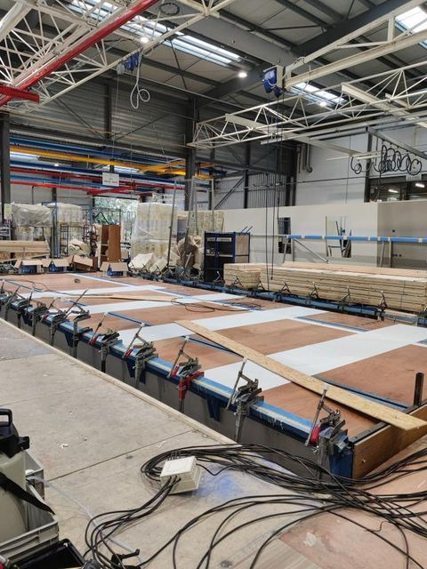
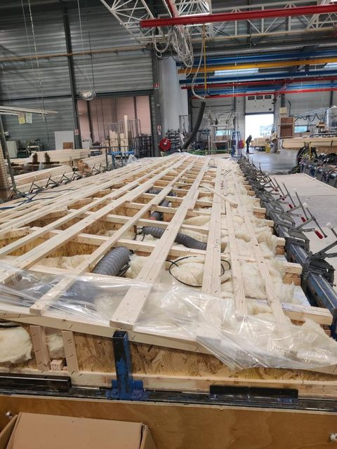
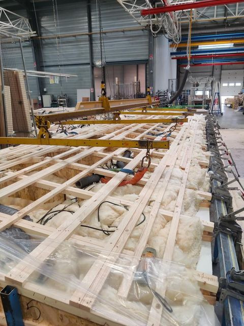

Stage opérateur — du 14 au 25 octobre 2024
Découverte d'une ligne de production — Bio Habitat
Stage de 2 semaines chez Bio Habitat (groupe Bénéteau), fabricant de mobil-homes à Givrand : postes en charpente et en service après-vente, première immersion dans le fonctionnement d'une chaîne de production industrielle cadencée.

Entreprise
Bio Habitat — groupe Bénéteau, fabricant de mobil-homes (site de Givrand, Vendée)
Postes occupés
Charpente (préparation de toiture) puis Service Après-Vente (SAV)
Statut
✅ Stage terminé — première immersion dans la production industrielle
Contexte général
Dans le cadre de ma première année en école d'ingénieur, ce stage chez Bio Habitat, entreprise du groupe Bénéteau spécialisée dans la fabrication de mobil-homes, m'a offert une première immersion dans l'univers de la production industrielle.
Sous la supervision de l'équipe encadrante, j'ai découvert plusieurs postes, notamment en charpente et en assemblage, ce qui m'a permis de mieux comprendre le fonctionnement d'une ligne de production, ses exigences, ainsi que les conditions de travail qui y sont associées. Le site de Givrand emploie habituellement 150 personnes, et peut monter jusqu'à 300 personnes en période de forte activité.
Produits et clients
Bio Habitat répartit sa production en fonction de la taille des mobil-homes. Les modèles de grande taille, de 25 à 40 m² (la taille maximale légale pour cette classification), sont fabriqués sur le site de Givrand. Les modèles de plus petite taille, sous 25 m², sont produits exclusivement sur le site de Saint-Hermine.
Tours-opérateurs & campings — 60 %
Grandes chaînes de campings et villages de vacances, qui équipent leurs sites avec des mobil-homes adaptés à leurs standards de confort et de service.
Indépendants & particuliers — 40 %
Revendeurs (IRM, O'Hara, Coco Sweet) qui livrent des particuliers, ainsi que des clients installant un mobil-home dans un espace privé ou un camping indépendant.
Pour répondre aux périodes de forte demande, Bio Habitat anticipe en produisant des mobil-homes en avance, sans commande spécifique, ce qui optimise les délais de livraison tout en maintenant la qualité.
Poste en charpente — préparation de toiture
Sur la chaîne de production continue, ma mission était de préparer la toiture des mobil-homes avant qu'elle ne soit fixée sur la structure. Je n'étais pas directement sur la ligne, mais je m'occupais de la préparation en amont, avec un même délai de 1h37 que chaque poste pour finaliser l'ossature avant de passer au mobil-home suivant.
Installation des planches en bois du plafond à l'aide d'un système de levage
Pose des femettes à la colle à bois, maintenues par des pinces métalliques
Pose de la laine de verre entre les poutres pour l'isolation thermique et acoustique
Intégration de la pieuvre électrique et de la VMC, selon un plan dédié à chaque mobil-home
Pose de planches supplémentaires vissées pour stabiliser la charpente
Montage final de la charpente sur le mobil-home à l'aide du système de levage



Planches de plafond & femettes collées
Isolation laine de verre & pieuvre électrique
Levage de la charpente avant montage
Un poste exigeant
La manipulation des matériaux ne se fait jamais sans EPI (gants, lunettes, chaussures renforcées). C'est l'un des postes les plus intensifs physiquement de l'entreprise — un axe d'amélioration identifié par Bio Habitat pour l'avenir.
Poste au service après-vente (SAV)
Contrairement à la chaîne de production, le travail au SAV n'est pas chronométré : l'objectif est de traiter le maximum de colis possible dans la journée. Le SAV touche environ un mobil-home sur cinq, et des particuliers peuvent aussi commander des pièces détachées sans posséder de mobil-home.
Mon travail consistait à consulter la liste des commandes, scanner chaque article pour localiser et vérifier sa disponibilité en stock, prélever la palette correspondante à l'aide d'un gerbeur, puis emballer le colis (papier bulle, film plastique, carton) selon sa taille et sa fragilité, avant de coller le bon de commande et préparer l'expédition.
| Transporteur | Type de colis | Passage quotidien |
|---|---|---|
| DPD | Colis volumineux | 14h30 |
| Geodis | Petits colis | 16h00 |
Les commandes sont gérées en France et en Europe, à l'exception du Royaume-Uni
Qualité et sécurité
La qualité est un aspect central chez Bio Habitat : j'ai pu observer des « portes qualité », des contrôles spécifiques à la fin de certaines étapes critiques, ainsi qu'un contrôle final avant expédition, vérifiant la solidité des charpentes, l'étanchéité des finitions et la sécurité des systèmes électriques et sanitaires. Des équipes dédiées rattrapent les erreurs et les tâches non terminées dans le temps imparti, une fois les mobil-homes stockés.
En matière de sécurité, les opérateurs doivent porter des EPI, et chaque poste est équipé de dispositifs comme des arrêts d'urgence et des barrières de protection. Une semaine d'intégration encadrée par des superviseurs expérimentés est dédiée à la sécurité pour tout nouvel arrivant.
Organisation du travail
Les opérateurs travaillent 42h30 par semaine, en rotation, afin de maintenir un rythme de production soutenu tout en respectant les périodes de repos. Durant les périodes de forte demande, comme avant les vacances estivales, les équipes peuvent être renforcées par des intérimaires, qui peuvent représenter jusqu'à 50 % des effectifs.
L'ambiance de travail est marquée par la coopération entre les secteurs, bien que des tensions ponctuelles puissent survenir en cas de retard ou de hausse de production. Créer des liens entre les secteurs est une valeur forte chez Bio Habitat, qui vise à fluidifier la communication et l'entraide.
Bilan
Ce que j'en retiens
- Découverte concrète du fonctionnement d'une ligne de production cadencée
- Compréhension du rôle de chaque poste dans la réalisation d'un produit final de qualité
- Importance des protocoles qualité et des règles de sécurité en milieu industriel
- Valeur de la coopération et de l'entraide entre les différents secteurs de l'entreprise
Ce stage m'a permis de comprendre non seulement le fonctionnement d'une ligne de production, mais aussi l'importance des valeurs humaines et de l'esprit d'équipe — une perspective enrichissante sur le monde industriel qui m'a motivé à envisager des solutions innovantes pour améliorer les processus de production.